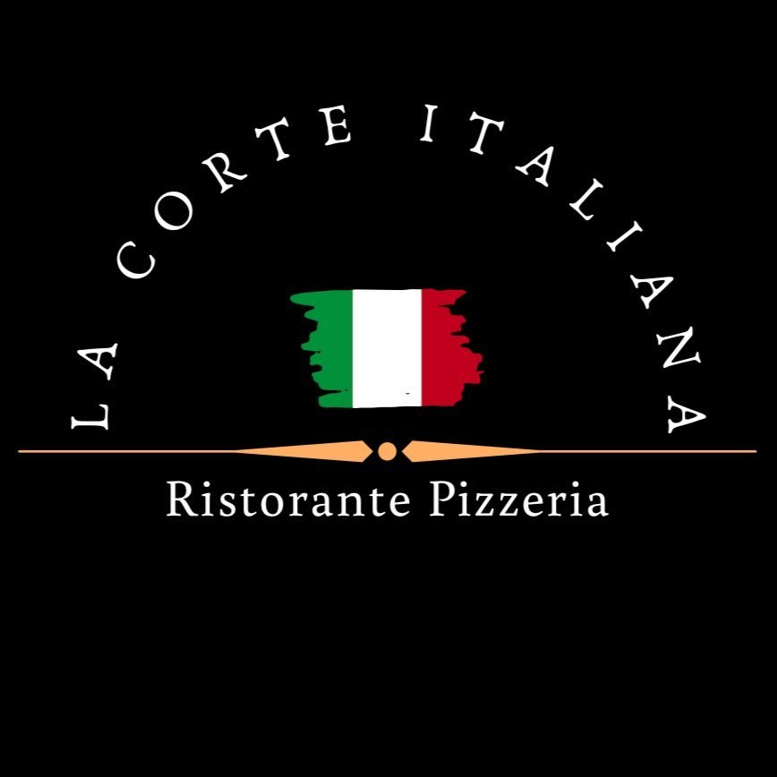

La carta de La Corte Italiana.
No encontramos ese plato. Prueba con otro nombre.
Tapas, ensaladas, pastas, pizzas, carnes y pescados de nuestra carta.
Consulta con el restaurante los precios, ingredientes, alérgenos y disponibilidad actuales. Los platos son recreaciones con IA sobre fotografías del local real.
UN SITIO PARA TI
Llama al equipo para consultar disponibilidad y reservar tu mesa.
La reserva se confirma directamente con el restaurante.